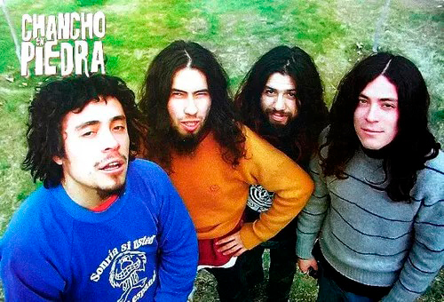
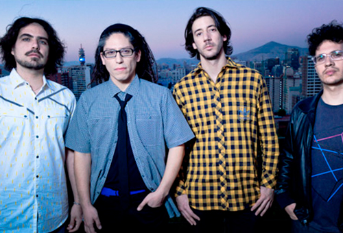
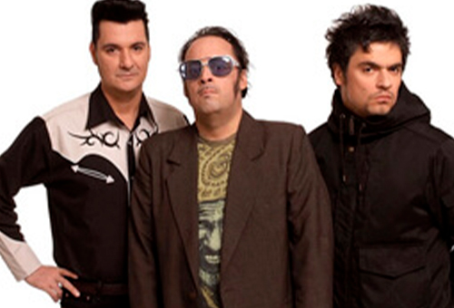

Música nacional
|  |
CHANCHO EN PIERDRAChancho en Piedra es un grupo de funk rock y rock experimental de Chile, formado en 1994 por Eduardo Lalo Ibeas, Pablo Ilabaca, Leonardo Toño Corvalán y Felipe Ilabaca. En el 2018 Cristian C-Funk Moraga, guitarrista de Los Tetas, reemplazaría a Pablo tras su salida de la banda, siendo el único cambio de alineación en la historia del grupo. |
|  |
LOS TETASLos Tetas fue una banda chilena formada en 1994. Fue una de las bandas pioneras en su país en trabajar bajo la influencia de la música negra de los años 1970. |
 |
LOS TRESLos tres es una banda de rock chilena oriunda de Concepción, activa desde 1987 al año 2000, y del 2006 a la actualidad. Compuesta en su etapa inicial por el guitarrista y vocalista Álvaro Henríquez, el bajista Roberto Titae Lindl, el baterista Francisco Molina, y —posteriormente— el guitarrista Ángel Parra, el cuarteto lograría consolidarse como la cara principal del rock chileno en Latinoamérica durante la década de los noventa y, a posteriori, como una de las bandas más influyentes e importantes de la música popular de Chile. |